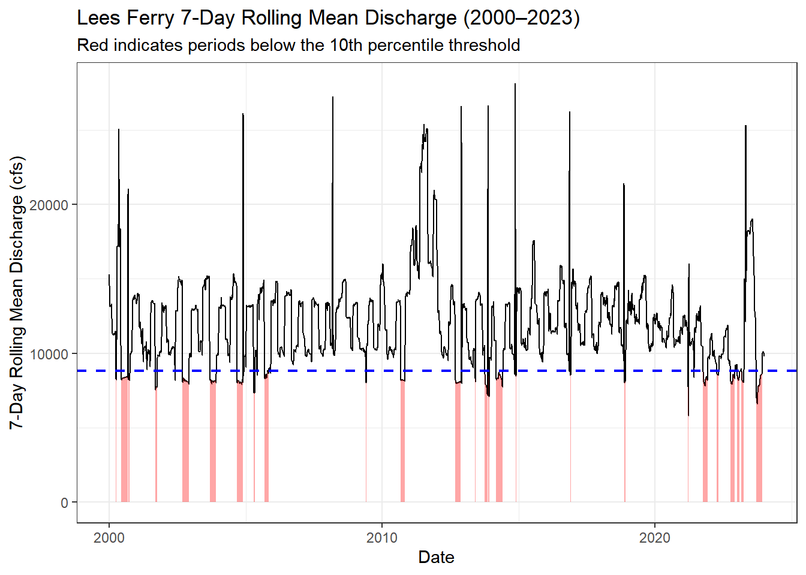
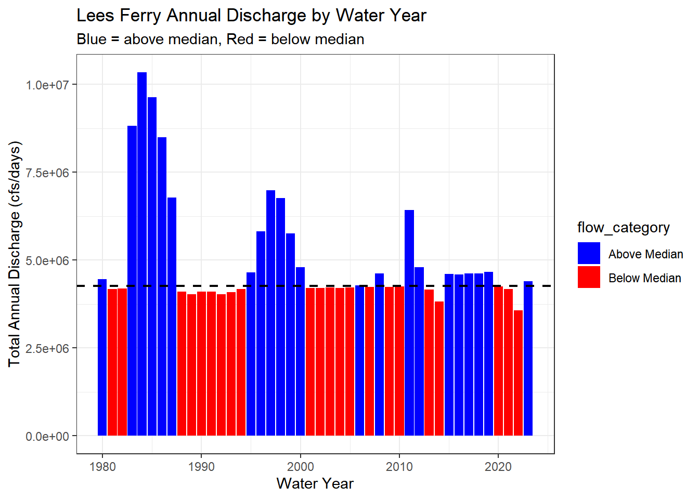
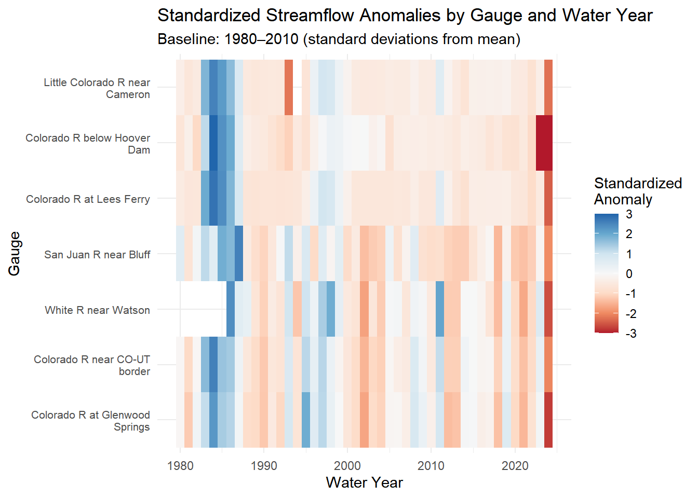
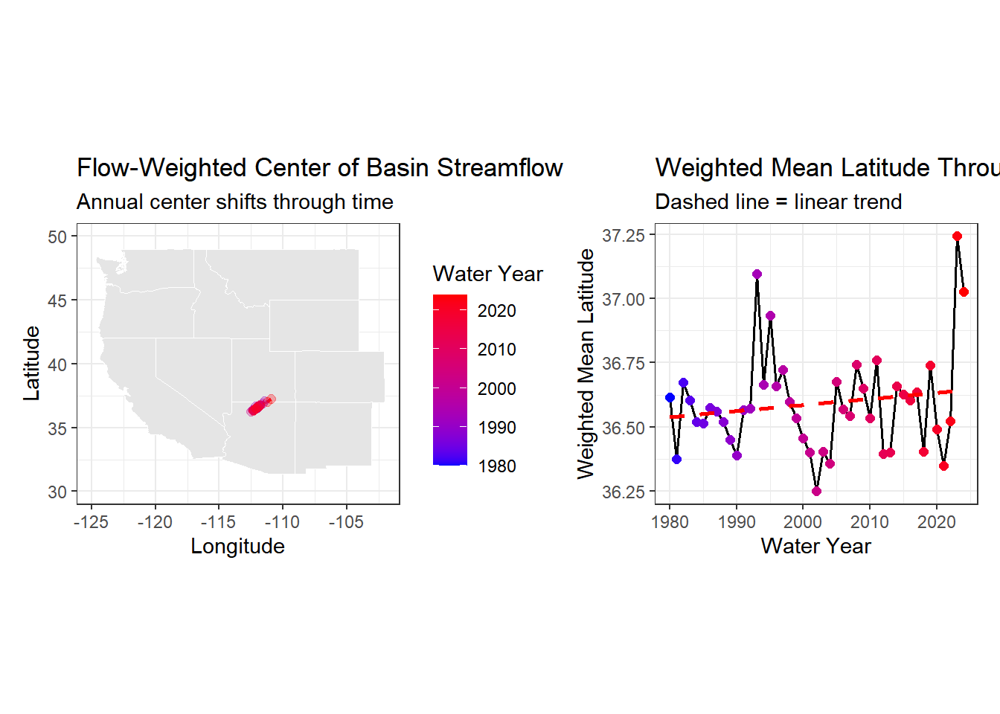
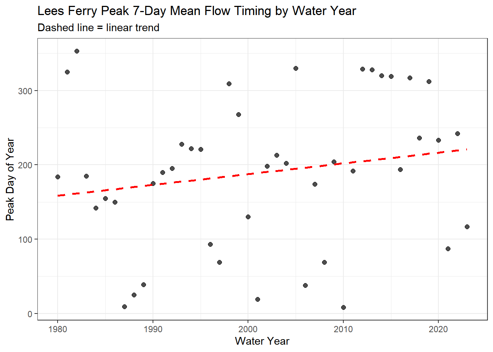
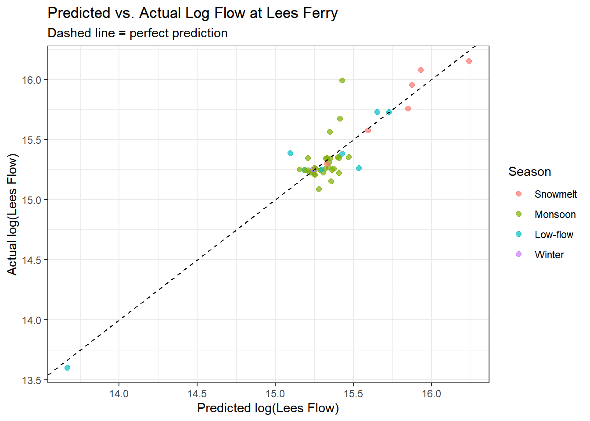
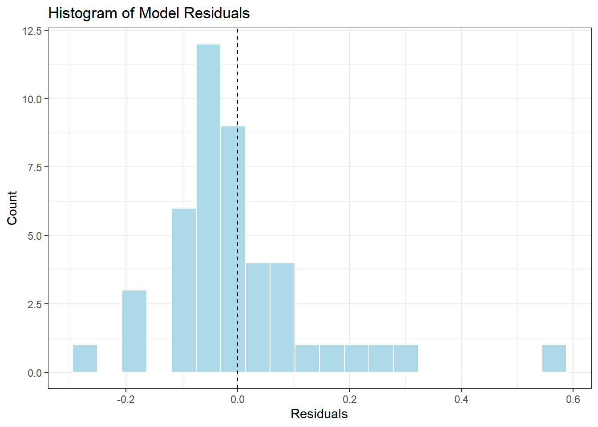

if (!requireNamespace("pacman", quietly = TRUE)) install.packages("pacman")
pacman::p_load(
tidyverse,
dataRetrieval,
zoo,
patchwork,
flextable,
lubridate,
broom
)Exploring Streamflow Across the Colorado River Basin
Exploring Streamflow Across the Colorado River Basin
Set Up
Libraries
Data
gauges <- tribble(
~site_no, ~name, ~state,
"09380000", "Colorado R at Lees Ferry", "AZ",
"09163500", "Colorado R near CO-UT border", "CO",
"09085000", "Colorado R at Glenwood Springs","CO",
"09306500", "White R near Watson", "UT",
"09379500", "San Juan R near Bluff", "UT",
"09402500", "Little Colorado R near Cameron","AZ",
"09423000", "Colorado R below Hoover Dam", "NV"
)
raw <- readNWISdv(
siteNumbers = gauges$site_no,
parameterCd= "00060",
startDate = "1980-01-01",
endDate = "2023-12-31"
) |>
renameNWISColumns() |>
left_join(gauges, by = "site_no") |>
select(site_no, name, state, Date, Flow)Warning: NWIS servers are slated for decommission. Please begin to migrate to
read_waterdata_daily.GET: https://waterservices.usgs.gov/nwis/dv/?site=09380000%2C09163500%2C09085000%2C09306500%2C09379500%2C09402500%2C09423000&format=waterml%2C1.1&ParameterCd=00060&StatCd=00003&startDT=1980-01-01&endDT=2023-12-31glimpse(raw)Rows: 109,425
Columns: 5
$ site_no <chr> "09085000", "09085000", "09085000", "09085000", "09085000", "0…
$ name <chr> "Colorado R at Glenwood Springs", "Colorado R at Glenwood Spri…
$ state <chr> "CO", "CO", "CO", "CO", "CO", "CO", "CO", "CO", "CO", "CO", "C…
$ Date <date> 1980-01-01, 1980-01-02, 1980-01-03, 1980-01-04, 1980-01-05, 1…
$ Flow <dbl> 620, 605, 582, 582, 575, 590, 582, 582, 582, 590, 560, 598, 59…Daily Conditions Report
Date Parameter Object:
my.date <- as.Date("2023-09-30")Day-over-day Change in Discharge:
df <- raw %>%
arrange(site_no, Date) %>%
group_by(site_no) %>%
mutate(flow_delta = Flow - lag(Flow)) %>%
ungroup()
glimpse(df)Rows: 109,425
Columns: 6
$ site_no <chr> "09085000", "09085000", "09085000", "09085000", "09085000",…
$ name <chr> "Colorado R at Glenwood Springs", "Colorado R at Glenwood S…
$ state <chr> "CO", "CO", "CO", "CO", "CO", "CO", "CO", "CO", "CO", "CO",…
$ Date <date> 1980-01-01, 1980-01-02, 1980-01-03, 1980-01-04, 1980-01-05…
$ Flow <dbl> 620, 605, 582, 582, 575, 590, 582, 582, 582, 590, 560, 598,…
$ flow_delta <dbl> NA, -15, -23, 0, -7, 15, -8, 0, 0, 8, -30, 38, 0, 22, 15, -…Highest Gauge Discharge on Selected Date:
df <- df %>%
mutate(Date = as.Date(Date))
date_flows <- df %>% filter(Date == my.date)
table1_data <- date_flows %>%
slice_max(order_by = Flow, n = 5, with_ties = FALSE) %>%
transmute(
'Site Number' = site_no,
'Gauge Name' = name,
'State' = state,
'Date' = Date,
'Discharge (cfs)' = round(Flow, 1)
)
table1_ft <- flextable(table1_data) %>%
set_header_labels(
'Site Number' = "Site Number",
'Gauge Name' = "Gauge Name",
'State' = "State",
'Date' = "Date",
'Discharge (cfs)' = "Discharge (cfs)"
) %>%
set_caption("Table 1. The 5 gauges with the highest discharge on the selected date") %>%
autofit()
table1_ftSite Number | Gauge Name | State | Date | Discharge (cfs) |
|---|---|---|---|---|
09402500 | Little Colorado R near Cameron | AZ | 2023-09-30 | 6,950 |
09380000 | Colorado R at Lees Ferry | AZ | 2023-09-30 | 6,570 |
09163500 | Colorado R near CO-UT border | CO | 2023-09-30 | 3,470 |
09379500 | San Juan R near Bluff | UT | 2023-09-30 | 680 |
09085000 | Colorado R at Glenwood Springs | CO | 2023-09-30 | 533 |
On the selected date, flow is greatest at Little Colorado R near Cameron at 6,950 cfs.
Greatest Day-Over-Day Increase:
table2_data <- date_flows %>%
slice_max(order_by = flow_delta, n = 5, with_ties = FALSE) %>%
transmute(
'Site Number' = site_no,
'Gauge Name' = name,
'State' = state,
'Date' = Date,
'Discharge (cfs)' = round(Flow, 1),
'Day-over-Day Change (cfs)' = round(flow_delta, 1)
)
table2_ft <- flextable(table2_data) %>%
set_header_labels(
'Site Number' = "Site Number",
'Gauge Name' = "Gauge Name",
'State' = "State",
'Date' = "Date",
'Discharge (cfs)' = "Discharge (cfs)",
'Day-over-Day Change (cfs)' = "Day-over-Day Change (cfs)"
) %>%
set_caption("Table 2. The 5 gauges with the greatest day-over-day increase in discharge on the selected date.") %>%
autofit()
table2_ftSite Number | Gauge Name | State | Date | Discharge (cfs) | Day-over-Day Change (cfs) |
|---|---|---|---|---|---|
09085000 | Colorado R at Glenwood Springs | CO | 2023-09-30 | 533 | 8 |
09306500 | White R near Watson | UT | 2023-09-30 | 329 | -7 |
09380000 | Colorado R at Lees Ferry | AZ | 2023-09-30 | 6,570 | -10 |
09402500 | Little Colorado R near Cameron | AZ | 2023-09-30 | 6,950 | -20 |
09163500 | Colorado R near CO-UT border | CO | 2023-09-30 | 3,470 | -50 |
Flow is rising fastest in Glenwood Springs at 8 cfs.
Basin Metadata Join
Add in each gauge’s drainage area to compare drainage.
Gather basin characteristics for each site
site_meta <- readNWISsite(gauges$site_no) |>
select(
site_no,
drain_area_va, # drainage area in square miles
huc_cd, # 8-digit HUC watershed code
dec_lat_va, # latitude
dec_long_va # longitude
)Warning: NWIS servers are slated for decommission. Please begin to migrate to
read_waterdata_monitoring_locationGET: https://waterservices.usgs.gov/nwis/site/?siteOutput=Expanded&format=rdb&site=09380000,09163500,09085000,09306500,09379500,09402500,09423000# Check for if n > 1, the join will duplicate rows
site_meta |> count(site_no) |> filter(n > 1)[1] site_no n
<0 rows> (or 0-length row.names)Use a full join to combine flow data and basin data by site number
basin_flow <- full_join(df, site_meta, by = "site_no")
glimpse(basin_flow)Rows: 109,425
Columns: 10
$ site_no <chr> "09085000", "09085000", "09085000", "09085000", "0908500…
$ name <chr> "Colorado R at Glenwood Springs", "Colorado R at Glenwoo…
$ state <chr> "CO", "CO", "CO", "CO", "CO", "CO", "CO", "CO", "CO", "C…
$ Date <date> 1980-01-01, 1980-01-02, 1980-01-03, 1980-01-04, 1980-01…
$ Flow <dbl> 620, 605, 582, 582, 575, 590, 582, 582, 582, 590, 560, 5…
$ flow_delta <dbl> NA, -15, -23, 0, -7, 15, -8, 0, 0, 8, -30, 38, 0, 22, 15…
$ drain_area_va <dbl> 1453, 1453, 1453, 1453, 1453, 1453, 1453, 1453, 1453, 14…
$ huc_cd <chr> "140100041003", "140100041003", "140100041003", "1401000…
$ dec_lat_va <dbl> 39.54667, 39.54667, 39.54667, 39.54667, 39.54667, 39.546…
$ dec_long_va <dbl> -107.3308, -107.3308, -107.3308, -107.3308, -107.3308, -…nrow(basin_flow) == nrow(df)[1] TRUE sum(is.na(basin_flow$drain_area_va))[1] 0Per Unit Area Normalization
Compare runoff intensity across sites within different drainage areas by normalize by expressing flow per unit area: cfs per square mile.
Create a normalized flow column
basin_flow <- basin_flow %>%
mutate(flow_per_sqmi = Flow / drain_area_va)Filter to date and create a ranking table
flow_rank <- basin_flow %>%
filter(Date == my.date) %>%
mutate(
raw_rank = min_rank(desc(Flow)),
normalized_rank = min_rank(desc(flow_per_sqmi))
) %>%
arrange(raw_rank) %>%
transmute(
'Gauge Name' = name,
'Raw Discharge (cfs)' = round(Flow, 1),
'Drainage Area (mi²)' = round(drain_area_va, 1),
'Normalized Flow (cfs/mi²)' = round(flow_per_sqmi, 3),
'Raw Rank' = raw_rank,
'Normalized Rank' = normalized_rank
)
flow_rank_ft <- flextable(flow_rank) %>%
set_caption("Raw and normalized discharge rankings for gauges on the selected dates") %>%
autofit()
flow_rank_ftGauge Name | Raw Discharge (cfs) | Drainage Area (mi²) | Normalized Flow (cfs/mi²) | Raw Rank | Normalized Rank |
|---|---|---|---|---|---|
Little Colorado R near Cameron | 6,950 | 141,600 | 0.049 | 1 | 5 |
Colorado R at Lees Ferry | 6,570 | 111,800 | 0.059 | 2 | 4 |
Colorado R near CO-UT border | 3,470 | 17,849 | 0.194 | 3 | 2 |
San Juan R near Bluff | 680 | 23,000 | 0.030 | 4 | 6 |
Colorado R at Glenwood Springs | 533 | 1,453 | 0.367 | 5 | 1 |
White R near Watson | 329 | 4,020 | 0.082 | 6 | 3 |
Colorado R below Hoover Dam | 173,300 |
The table above shows that raw and normalized rankings differ substantially. The most dramatic change is for Colorado River at Glenwood Springs, which changes from 5th in raw discharge to 1st when normalized, indicating a much higher flow per unit area despite a smaller total flow.
Per-area normalization matters in the Colorado Basin because watersheds vary in size- large rivers naturally carry more total water, but smaller basins can be much more hydrologically “intense” when flow is scaled by drainage area, making comparisons more meaningful.
Raw discharge would be used for analyses such as water supply where total volume matters, while normalized discharge is better for comparing runoff efficiency across basins of different sizes.
Low-Flow Threshold Monitoring
Rolling Mean of Discharge
basin_flow <- basin_flow %>%
arrange(site_no, Date) %>%
group_by(site_no) %>%
mutate(
flow_7day = rollmean(Flow, k = 7, fill = NA, align = "right")
) %>%
ungroup()Low-flow threshold for each gauge as the 10th percentile of its historical discharge during 1980–2010.
#Get historical reference
hist_ref <- basin_flow %>%
filter(Date >= as.Date("1980-01-01"),
Date <= as.Date("2010-12-31"))
#Compute 10th percentile threshhold
lowflow_thresh <- hist_ref %>%
group_by(site_no) %>%
summarize(
q10_thresh = quantile(flow_7day, probs = 0.10, na.rm = TRUE),
.groups = "drop"
)
lowflow_thresh# A tibble: 7 × 2
site_no q10_thresh
<chr> <dbl>
1 09085000 430.
2 09163500 2597.
3 09306500 259.
4 09379500 655.
5 09380000 8824.
6 09402500 9369.
7 09423000 7989.Logic Column
basin_flow <- basin_flow %>%
left_join(lowflow_thresh, by = "site_no") %>%
mutate(
below_threshold = flow_7day < q10_thresh
)
glimpse(basin_flow)Rows: 109,425
Columns: 14
$ site_no <chr> "09085000", "09085000", "09085000", "09085000", "09085…
$ name <chr> "Colorado R at Glenwood Springs", "Colorado R at Glenw…
$ state <chr> "CO", "CO", "CO", "CO", "CO", "CO", "CO", "CO", "CO", …
$ Date <date> 1980-01-01, 1980-01-02, 1980-01-03, 1980-01-04, 1980-…
$ Flow <dbl> 620, 605, 582, 582, 575, 590, 582, 582, 582, 590, 560,…
$ flow_delta <dbl> NA, -15, -23, 0, -7, 15, -8, 0, 0, 8, -30, 38, 0, 22, …
$ drain_area_va <dbl> 1453, 1453, 1453, 1453, 1453, 1453, 1453, 1453, 1453, …
$ huc_cd <chr> "140100041003", "140100041003", "140100041003", "14010…
$ dec_lat_va <dbl> 39.54667, 39.54667, 39.54667, 39.54667, 39.54667, 39.5…
$ dec_long_va <dbl> -107.3308, -107.3308, -107.3308, -107.3308, -107.3308,…
$ flow_per_sqmi <dbl> 0.4267034, 0.4163799, 0.4005506, 0.4005506, 0.3957330,…
$ flow_7day <dbl> NA, NA, NA, NA, NA, NA, 590.8571, 585.4286, 582.1429, …
$ q10_thresh <dbl> 429.7143, 429.7143, 429.7143, 429.7143, 429.7143, 429.…
$ below_threshold <lgl> NA, NA, NA, NA, NA, NA, FALSE, FALSE, FALSE, FALSE, FA…7 Day Rolling Mean of Lees Ferry from 2000-2023
lees_ferry <- basin_flow %>%
filter(site_no == "09380000",
Date >= as.Date("2000-01-01"),
Date <= as.Date("2023-12-31"))ggplot(lees_ferry, aes(x = Date, y = flow_7day)) +
geom_line(color = "black", linewidth = 0.5) +
geom_ribbon(
aes(
ymin = 0,
ymax = ifelse(below_threshold, flow_7day, NA)
),
fill = "red",
alpha = 0.35
) +
geom_hline(
aes(yintercept = q10_thresh),
linetype = "dashed",
color = "blue",
linewidth = 0.8
) +
labs(
title = "Lees Ferry 7-Day Rolling Mean Discharge (2000–2023)",
subtitle = "Red indicates periods below the 10th percentile threshold",
x = "Date",
y = "7-Day Rolling Mean Discharge (cfs)"
) +
theme_bw()Warning: Removed 7653 rows containing missing values or values outside the scale range
(`geom_ribbon()`).
Average number of below-threshold days per year in 2000–2010 vs 2011–2023
lees_yearly <- basin_flow %>%
filter(site_no == "09380000",
Date >= as.Date("2000-01-01"),
Date <= as.Date("2023-12-31")) %>%
mutate(period = case_when(
Date >= as.Date("2000-01-01") & Date <= as.Date("2010-12-31") ~ "2000-2010",
Date >= as.Date("2011-01-01") & Date <= as.Date("2023-12-31") ~ "2011-2023"
),
year = lubridate::year(Date)) %>%
group_by(period, year) %>%
summarize(
below_days = sum(below_threshold, na.rm = TRUE),
.groups = "drop"
)
lees_yearly# A tibble: 24 × 3
period year below_days
<chr> <dbl> <int>
1 2000-2010 2000 115
2 2000-2010 2001 28
3 2000-2010 2002 92
4 2000-2010 2003 88
5 2000-2010 2004 79
6 2000-2010 2005 80
7 2000-2010 2006 0
8 2000-2010 2007 0
9 2000-2010 2008 0
10 2000-2010 2009 7
# ℹ 14 more rowslees_summary <- lees_yearly %>%
group_by(period) %>%
summarize(
`Number of Years` = n_distinct(year),
`Average Below-Threshold Days per Year` = round(mean(below_days), 1),
`Minimum Days in a Year` = min(below_days),
`Maximum Days in a Year` = max(below_days),
.groups = "drop"
)
lees_summary_ft <- flextable(lees_summary) %>%
set_caption("Lees Ferry average annual number of below-threshold days by period") %>%
autofit()
lees_summary_ftperiod | Number of Years | Average Below-Threshold Days per Year | Minimum Days in a Year | Maximum Days in a Year |
|---|---|---|---|---|
2000-2010 | 11 | 49.5 | 0 | 115 |
2011-2023 | 13 | 43.7 | 0 | 150 |
Lees Ferry averaged 49.5 below threshold days per year during 2000–2010 and 43.7 days per year during 2011–2023, indicating a slight decrease in low-flow days for the 2011-2023. However, the higher maximum value (150 days) after 2011 suggests that extreme low-flow years have become more frequent, even if average conditions have not worsened. This implies that while baseline conditions may not have shifted dramatically, the risk of extreme drought years still poses a significant challenge for reliably meeting Colorado River Compact delivery obligations.
Annual Water Year Summary
Assign Water Years
basin_flow <- basin_flow %>%
mutate(
month = month(Date),
water_year = if_else(
month >= 10,
year(Date) + 1,
year(Date)
)
)Check that worked
basin_flow %>%
select(Date, month, water_year) %>%
filter(Date >= as.Date("2022-09-25"),
Date <= as.Date("2022-10-05"))# A tibble: 66 × 3
Date month water_year
<date> <dbl> <dbl>
1 2022-09-25 9 2022
2 2022-09-26 9 2022
3 2022-09-27 9 2022
4 2022-09-28 9 2022
5 2022-09-29 9 2022
6 2022-09-30 9 2022
7 2022-10-01 10 2023
8 2022-10-02 10 2023
9 2022-10-03 10 2023
10 2022-10-04 10 2023
# ℹ 56 more rowsDischarge Statistics by Gauge and Water Year
annual_metrics <- basin_flow %>%
group_by(site_no, water_year) %>%
summarize(
total_annual_discharge = sum(Flow, na.rm = TRUE),
peak_daily_discharge = max(Flow, na.rm = TRUE),
days_below_threshold = sum(below_threshold, na.rm = TRUE),
.groups = "drop"
)Warning: There were 2 warnings in `summarize()`.
The first warning was:
ℹ In argument: `peak_daily_discharge = max(Flow, na.rm = TRUE)`.
ℹ In group 307: `site_no = "09423000"` `water_year = 2023`.
Caused by warning in `max()`:
! no non-missing arguments to max; returning -Inf
ℹ Run `dplyr::last_dplyr_warnings()` to see the 1 remaining warning.glimpse(annual_metrics)Rows: 308
Columns: 5
$ site_no <chr> "09085000", "09085000", "09085000", "09085000",…
$ water_year <dbl> 1980, 1981, 1982, 1983, 1984, 1985, 1986, 1987,…
$ total_annual_discharge <dbl> 432890, 271835, 469712, 603893, 765741, 644976,…
$ peak_daily_discharge <dbl> 7170, 4110, 5500, 11200, 9510, 9690, 7020, 5720…
$ days_below_threshold <int> 0, 105, 0, 13, 0, 0, 0, 0, 4, 48, 158, 51, 84, …Annual Discharge at Lee’s Ferry
lees_annual <- annual_metrics %>%
filter(site_no == "09380000",
water_year >= 1980,
water_year <= 2023)median_flow <- median(lees_annual$total_annual_discharge, na.rm = TRUE)lees_annual <- lees_annual %>%
mutate(
flow_category = if_else(
total_annual_discharge >= median_flow,
"Above Median",
"Below Median"
)
)ggplot(lees_annual, aes(x = water_year, y = total_annual_discharge, fill = flow_category)) +
geom_col() +
scale_fill_manual(
values = c("Above Median" = "blue", "Below Median" = "red")
) +
geom_hline(
yintercept = median_flow,
linetype = "dashed",
color = "black",
linewidth = 0.8
) +
labs(
title = "Lees Ferry Annual Discharge by Water Year",
subtitle = "Blue = above median, Red = below median",
x = "Water Year",
y = "Total Annual Discharge (cfs/days)"
) +
theme_bw()
The record shows a structural shift toward lower annual discharge beginning in the early 2000s., with most years after 2000 fall below the long-term median compared to more frequent above-median years in the 1980s–1990s. One notable exception is 2011, which stands out as a very high-flow year due to an large snowpack and therefore strong spring runoff across the Colorado River Basin. This pattern indicates a drier baseline in recent decades, meaning Compact water accounting must account for fewer high-flow years and should adjust the baseline, to not over budget the system.
Basin Wide Trend Analysis
1980-2010 Baseline and STD Per Gauge
baseline_stats <- annual_metrics %>%
filter(water_year >= 1980, water_year <= 2010) %>%
group_by(site_no) %>%
summarize(
baseline_mean = mean(total_annual_discharge, na.rm = TRUE),
baseline_sd = sd(total_annual_discharge, na.rm = TRUE),
.groups = "drop"
)
baseline_stats# A tibble: 7 × 3
site_no baseline_mean baseline_sd
<chr> <dbl> <dbl>
1 09085000 442662. 142956.
2 09163500 2350170 995807.
3 09306500 244230. 79408.
4 09379500 744206. 348862.
5 09380000 5255320. 1818256.
6 09402500 5339803. 1998916.
7 09423000 5464464. 1687215.annual_anomaly <- annual_metrics %>%
left_join(baseline_stats, by = "site_no")Check Join
nrow(annual_anomaly) == nrow(annual_metrics)[1] TRUEsum(is.na(annual_anomaly$baseline_mean))[1] 0sum(is.na(annual_anomaly$baseline_sd))[1] 0annual_anomaly <- annual_anomaly %>%
mutate(
anomaly = (total_annual_discharge - baseline_mean) / baseline_sd
)Heat map of Anomaly
annual_anomaly <- annual_anomaly %>%
left_join(select(basin_flow, site_no, name) %>% distinct(), by = "site_no")ggplot(annual_anomaly,
aes(x = water_year,
y = fct_reorder(str_wrap(name, width = 25), site_no),
fill = anomaly)) +
geom_tile() +
scale_fill_distiller(
palette = "RdBu",
direction = 1, # blue = wet, red = dry
limits = c(-3, 3), # optional but recommended
oob = scales::squish, # clamps extreme values
name = "Standardized\nAnomaly"
) +
labs(
title = "Standardized Streamflow Anomalies by Gauge and Water Year",
subtitle = "Baseline: 1980–2010 (standard deviations from mean)",
x = "Water Year",
y = "Gauge"
) +
theme_minimal() +
theme(
axis.text.y = element_text(size = 8)
)Warning in mean.default(sort(x, partial = half + 0L:1L)[half + 0L:1L]):
argument is not numeric or logical: returning NA
The post-2000 drought signal appears consistently across nearly all gauges, with widespread negative anomalies indicating that dry conditions are basin-wide. A clear basin-wide dry year is 2002, driven by severe drought and low snow pack associated with La Niña conditions, while a basin-wide wet year is 2011, caused by a large snowpack linked to a La Niña enhanced winter. The synchronization of anomalies across gauges shows that the Colorado River Basin often responds as a connected system to climate events, meaning impacts to water availability and Compact obligations should be evaluated across the entire basin.
The Moving Center of Drought
Add Coordinates Through Join
annual_geo <- annual_metrics %>%
left_join(
site_meta %>% select(site_no, dec_lat_va, dec_long_va),
by = "site_no"
)Check
nrow(annual_geo) == nrow(annual_metrics)[1] TRUEsum(is.na(annual_geo$dec_lat_va))[1] 0sum(is.na(annual_geo$dec_long_va))[1] 0flow_center <- annual_geo %>%
group_by(water_year) %>%
summarize(
weighted_lat = sum(dec_lat_va * total_annual_discharge, na.rm = TRUE) /
sum(total_annual_discharge, na.rm = TRUE),
weighted_lon = sum(dec_long_va * total_annual_discharge, na.rm = TRUE) /
sum(total_annual_discharge, na.rm = TRUE),
.groups = "drop"
)
flow_center# A tibble: 45 × 3
water_year weighted_lat weighted_lon
<dbl> <dbl> <dbl>
1 1980 36.6 -112.
2 1981 36.4 -112.
3 1982 36.7 -112.
4 1983 36.6 -112.
5 1984 36.5 -112.
6 1985 36.5 -112.
7 1986 36.6 -112.
8 1987 36.6 -112.
9 1988 36.5 -112.
10 1989 36.5 -112.
# ℹ 35 more rowsWestern US
states_map <- ggplot2::map_data("state")
west_map <- states_map %>%
filter(region %in% c(
"washington", "oregon", "california", "idaho", "nevada",
"utah", "arizona", "montana", "wyoming", "colorado",
"new mexico"
))
# Map with flow-weighted center through time
p_map <- ggplot() +
geom_polygon(
data = west_map,
aes(x = long, y = lat, group = group),
fill = "grey90",
color = "white",
linewidth = 0.2
) +
geom_path(
data = flow_center %>% arrange(water_year),
aes(x = weighted_lon, y = weighted_lat, color = water_year),
linewidth = 0.8,
alpha = 0.7
) +
geom_point(
data = flow_center,
aes(x = weighted_lon, y = weighted_lat, color = water_year),
size = 2,
alpha = 0.3
) +
scale_color_gradient(
low = "blue",
high = "red",
name = "Water Year"
) +
coord_fixed(xlim = c(-125, -102), ylim = c(30, 50)) +
labs(
title = "Flow-Weighted Center of Basin Streamflow",
subtitle = "Annual center shifts through time",
x = "Longitude",
y = "Latitude"
) +
theme_bw()
# Weighted latitude through time with linear trend
p_lat <- ggplot(flow_center, aes(x = water_year, y = weighted_lat)) +
geom_line(linewidth = 0.7, color = "black") +
geom_point(aes(color = water_year), size = 2) +
geom_smooth(method = "lm", se = FALSE, linetype = "dashed", color = "red") +
scale_color_gradient(
low = "blue",
high = "red",
guide = "none"
) +
labs(
title = "Weighted Mean Latitude Through Time",
subtitle = "Dashed line = linear trend",
x = "Water Year",
y = "Weighted Mean Latitude"
) +
theme_bw()
p_map + p_lat`geom_smooth()` using formula = 'y ~ x'
The two years where the weighted center shifts sharply northward are 1995 and 2023, both of which correspond to high snowpack years driven by strong winter storm activity (1995 from a series of Pacific storm tracks and 2023 from an intense atmospheric river–dominated winter). These years both have unusually large snow accumulation in the northern headwaters, which dominates total basin flow and pulls the flow-weighted center north. The long-term upward trend in weighted latitude suggests that northern portions of the basin are becoming important contributors to total flow, likely due to declining snowpack and increased aridity in southern tributaries. This matters for water managers because it indicates increasing reliance on northern water sources to meet downstream Compact obligations, reducing resilience if those headwater regions experience future drought.
Seasonal Regimes and Peak Timing
Define Seasons
basin_flow <- basin_flow %>%
mutate(
month = month(Date),
season = case_when(
month %in% 4:6 ~ "Snowmelt",
month %in% 7:9 ~ "Monsoon",
month %in% 10:12 ~ "Low-flow",
month %in% 1:3 ~ "Winter"
),
season = factor(
season,
levels = c("Snowmelt", "Monsoon", "Low-flow", "Winter")
)
)table(basin_flow$season)
Snowmelt Monsoon Low-flow Winter
27299 27541 27600 26985 Seasonal totals and normalized runoff
seasonal_metrics <- basin_flow %>%
group_by(site_no, name, water_year, season, drain_area_va) %>%
summarize(
total_seasonal_discharge = sum(Flow, na.rm = TRUE),
normalized_runoff = total_seasonal_discharge / first(drain_area_va),
.groups = "drop"
)Peak 7-day mean timing by water year
peak_timing <- basin_flow %>%
filter(!is.na(flow_7day)) %>%
group_by(site_no, water_year) %>%
slice_max(flow_7day, n = 1, with_ties = FALSE) %>%
ungroup() %>%
mutate(
peak_doy = yday(Date)
)Lee’s Ferry
lees_peak <- peak_timing %>%
filter(site_no == "09380000",
water_year >= 1980,
water_year <= 2023)
ggplot(lees_peak, aes(x = water_year, y = peak_doy)) +
geom_point(size = 2, alpha = 0.7) +
geom_smooth(method = "lm", se = FALSE, linetype = "dashed", color = "red") +
labs(
title = "Lees Ferry Peak 7-Day Mean Flow Timing by Water Year",
subtitle = "Dashed line = linear trend",
x = "Water Year",
y = "Peak Day of Year"
) +
theme_bw()`geom_smooth()` using formula = 'y ~ x'
The trend shows a slight shift toward later peak timing, roughly 50–60 days later over the full record, though the data are highly scattered. The trend is weak and partially buried in noise, with large year-to-year variability that makes the signal difficult to distinguish clearly. If peak timing were instead two weeks earlier, reservoir managers would need to release or store water sooner in the spring, reducing flexibility and increasing the risk of missing peak runoff or spilling water before it can be captured for downstream use.
Predicting Lees Ferry from Upstream Conditions
Data Preparation
Lees Annual
lees_annual <- annual_metrics %>%
filter(site_no == "09380000") %>%
select(water_year, total_annual_discharge) %>%
rename(lees_flow = total_annual_discharge)Glenwood Springs
glenwood_annual <- annual_metrics %>%
filter(site_no == "09085000") %>%
select(water_year, total_annual_discharge) %>%
rename(glenwood_flow = total_annual_discharge)Join Lees and Glenwood
model_df <- lees_annual %>%
left_join(glenwood_annual, by = "water_year")Find Dominate Season at Lees
lees_season <- seasonal_metrics %>%
filter(site_no == "09380000") %>%
group_by(water_year) %>%
slice_max(total_seasonal_discharge, n = 1, with_ties = FALSE) %>%
ungroup() %>%
select(water_year, season) %>%
rename(dominant_season = season)Join Dominant Season
model_df <- model_df %>%
left_join(lees_season, by = "water_year")Log Transform Flows
model_df <- model_df %>%
mutate(
log_lees = log(lees_flow),
log_glenwood = log(glenwood_flow)
)Check
nrow(model_df) [1] 45sum(is.na(model_df)) [1] 0summary(model_df) water_year lees_flow glenwood_flow dominant_season
Min. :1980 Min. : 806900 Min. : 49316 Snowmelt: 6
1st Qu.:1991 1st Qu.: 4178800 1st Qu.:303507 Monsoon :28
Median :2002 Median : 4247580 Median :412232 Low-flow: 8
Mean :2002 Mean : 4942308 Mean :415264 Winter : 3
3rd Qu.:2013 3rd Qu.: 4800420 3rd Qu.:501477
Max. :2024 Max. :10335100 Max. :765741
log_lees log_glenwood
Min. :13.60 Min. :10.81
1st Qu.:15.25 1st Qu.:12.62
Median :15.26 Median :12.93
Mean :15.35 Mean :12.86
3rd Qu.:15.38 3rd Qu.:13.13
Max. :16.15 Max. :13.55 all(model_df$log_lees > 0)[1] TRUEall(model_df$log_glenwood > 0)[1] TRUEModel Building
Fit interaction model
model <- lm(log_lees ~ log_glenwood * dominant_season, data = model_df)
summary(model)
Call:
lm(formula = log_lees ~ log_glenwood * dominant_season, data = model_df)
Residuals:
Min 1Q Median 3Q Max
-0.27318 -0.06674 -0.01845 0.03094 0.56592
Coefficients:
Estimate Std. Error t value Pr(>|t|)
(Intercept) -8.1111 5.2736 -1.538 0.132543
log_glenwood 1.7973 0.3963 4.535 5.87e-05 ***
dominant_seasonMonsoon 20.1876 5.4074 3.733 0.000634 ***
dominant_seasonLow-flow 12.1775 5.3649 2.270 0.029133 *
dominant_seasonWinter 23.0070 8.4577 2.720 0.009880 **
log_glenwood:dominant_seasonMonsoon -1.5456 0.4071 -3.797 0.000527 ***
log_glenwood:dominant_seasonLow-flow -0.9088 0.4040 -2.249 0.030527 *
log_glenwood:dominant_seasonWinter -1.7699 0.6533 -2.709 0.010156 *
---
Signif. codes: 0 '***' 0.001 '**' 0.01 '*' 0.05 '.' 0.1 ' ' 1
Residual standard error: 0.1534 on 37 degrees of freedom
Multiple R-squared: 0.8554, Adjusted R-squared: 0.828
F-statistic: 31.27 on 7 and 37 DF, p-value: 1.116e-13The model explains a large portion of the variability in Lees Ferry flow (R² = 0.855) and is highly statistically significant (p < 0.001). The coefficient on log_glenwood (1.80) indicates a super-linear relationship: a 1% increase in flow at Glenwood Springs is associated with about a 1.8% increase at Lees Ferry, reflecting downstream amplification as additional tributaries contribute flow. The significant negative interaction terms for Monsoon, Low-flow, and Winter show that this upstream–downstream relationship is weaker outside of the Snowmelt season. This suggests that spring snowmelt provides a strong, basin-wide signal linking headwaters to downstream flow, while other seasons are more influenced by localized processes and contribute less predictability.
Model Evaluation
Use the Broom Package to Tidy Data
Add fitted predictions and residuals
aug <- augment(model, data = model_df)
glimpse(aug)Rows: 45
Columns: 12
$ water_year <dbl> 1980, 1981, 1982, 1983, 1984, 1985, 1986, 1987, 1988, …
$ lees_flow <dbl> 4462080, 4182140, 4186800, 8819610, 10335100, 9626610,…
$ glenwood_flow <dbl> 432890, 271835, 469712, 603893, 765741, 644976, 624342…
$ dominant_season <fct> Monsoon, Low-flow, Monsoon, Monsoon, Snowmelt, Snowmel…
$ log_lees <dbl> 15.31113, 15.24633, 15.24745, 15.99249, 16.15106, 16.0…
$ log_glenwood <dbl> 12.97824, 12.51295, 13.05988, 13.31115, 13.54860, 13.3…
$ .fitted <dbl> 15.34278, 15.18434, 15.36333, 15.42657, 16.24010, 15.9…
$ .resid <dbl> -0.031655369, 0.061992951, -0.115879672, 0.565920328, …
$ .hat <dbl> 0.03997428, 0.12506273, 0.04886508, 0.10687339, 0.5615…
$ .sigma <dbl> 0.1554564, 0.1551569, 0.1542839, 0.1193099, 0.1539264,…
$ .cooksd <dbl> 2.307709e-04, 3.333728e-03, 3.851238e-03, 2.278377e-01…
$ .std.resid <dbl> -0.210565226, 0.431951071, -0.774402764, 3.902828621, …Plot of Predicted versus Actual
ggplot(aug, aes(x = .fitted, y = log_lees, color = dominant_season)) +
geom_point(size = 2, alpha = 0.7) +
geom_abline(slope = 1, intercept = 0, linetype = "dashed") +
labs(
title = "Predicted vs. Actual Log Flow at Lees Ferry",
subtitle = "Dashed line = perfect prediction",
x = "Predicted log(Lees Flow)",
y = "Actual log(Lees Flow)",
color = "Season"
) +
theme_bw()
aug %>%
mutate(abs_resid = abs(.resid)) %>%
arrange(desc(abs_resid)) %>%
select(water_year, dominant_season, log_lees, .fitted, .resid) %>%
slice(1)# A tibble: 1 × 5
water_year dominant_season log_lees .fitted .resid
<dbl> <fct> <dbl> <dbl> <dbl>
1 1983 Monsoon 16.0 15.4 0.566The predicted vs. actual plot shows that most observations fall close to the 1:1 line, indicating good model performance. However, 1983 Monsoon stands out as a clear outlier, where the model substantially underpredicts Lees Ferry flow, suggesting that the model struggles to capture extreme hydrologic conditions, likely associated with unusual climate dynamics in that year.
Histogram of Residuals
ggplot(aug, aes(x = .resid)) +
geom_histogram(bins = 20,
fill = "lightblue",
color = "white" ) +
geom_vline(xintercept = 0, linetype = "dashed") +
labs(
title = "Histogram of Model Residuals",
x = "Residuals",
y = "Count"
) +
theme_bw()
The clear outlier of the model is 1983, where the model substantially underpredicts flow at Lees Ferry. This year corresponds to a wet El Niño-driven winter, which produced unusually large basin-wide runoff that is not fully captured by Glenwood Springs alone. The residuals are roughly centered around zero but have a right-skewed tail, indicating occasional large underpredictions in extreme high-flow years. Two predictors that would improve the model are SWE, which directly controls spring runoff, and a climate index such as ENSO (El Niño/La Niña), which influences precipitation patterns and helps capture extreme wet or dry years that a single gauge cannot fully represent.
Citations
Adapted from Lab 1 by Mike Johnson
Colorado River / Hydrology
U.S. Bureau of Reclamation. (n.d.). Colorado River Basin overview. https://www.usbr.gov/lc/region/g4000/
ENSO (El Niño / La Niña)
National Oceanic and Atmospheric Administration (NOAA). (n.d.). ENSO: El Niño and La Niña https://www.climate.gov/enso
El Niño 1982–1983 Event
National Oceanic and Atmospheric Administration (NOAA). (n.d.). Looking back at the 1982–83 El Niño. https://www.climate.gov/news-features/blogs/enso/looking-back-1982-83-el-nino
Atmospheric Rivers
National Oceanic and Atmospheric Administration (NOAA). (n.d.). Atmospheric rivers and their impacts.
https://www.climate.gov/news-features/understanding-climate/atmospheric-rivers